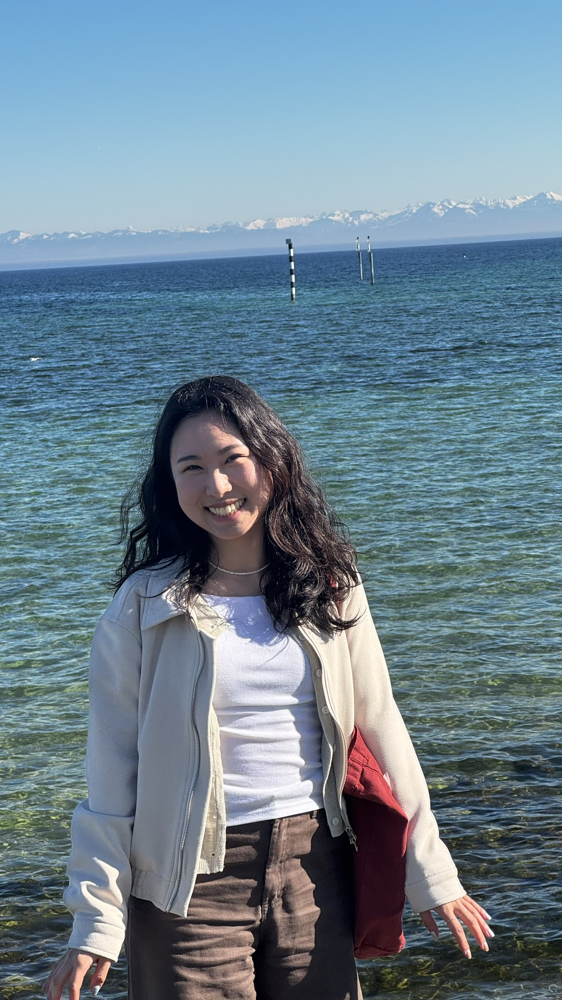
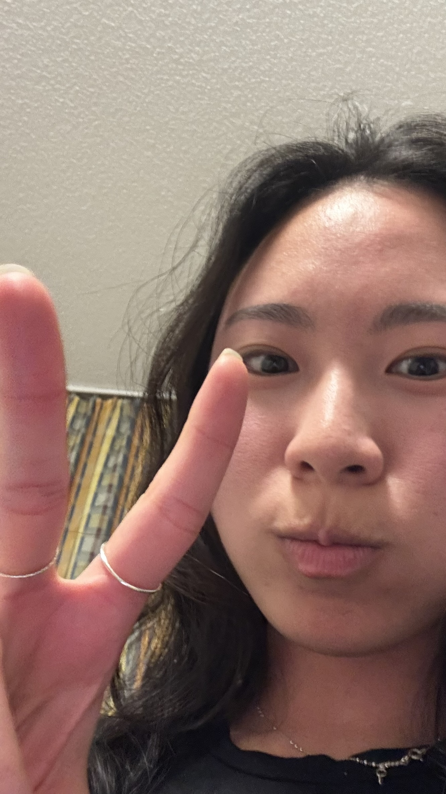
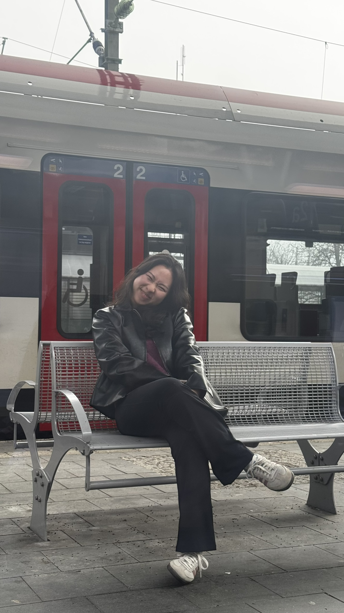

Dew...
듀...
Scroll softly

Even with oceans between us, the memories feel like yesterday.
우리 사이에 바다가 있어도, 그 기억들은 어제처럼 생생해.
I miss the little moments.
The laughter, the quiet, the warmth.
그 작은 순간들이 그리워.
웃음, 고요함, 그리고 따뜻함.

I still remember your smile, the way time seemed to stop when we were together.
네 미소, 그리고 우리가 함께 있을 때 시간이 멈춘 것 같았던 그 느낌을 아직도 기억해.

Brazil and Germany...
The distance is far, but what we had was real.
브라질과 독일... 거리는 멀지만, 우리가 나눴던 건 진짜였으니까.
They say distance fades feelings,
but for me, it only made them stronger.
거리가 감정을 흐릿하게 만든다지만,
내겐 오히려 더 강하게 만들었어.


Every place I go, I still see pieces of you.
어디를 가든, 여전히 네 흔적들이 보여.

I know things got hard,
and the miles didn't help.
상황이 힘들었다는 거 알아,
멀리 떨어져 있는 것도 도움이 되지 않았겠지.

I can't let go without knowing if there is still a spark left.
아직 작은 불꽃이라도 남아 있는지 모른 채로 포기할 수 없어.
Could we try again?
Even from afar.
우리 다시 시작해볼 수 있을까?
비록 멀리 떨어져 있더라도.
I have so much more I’d love to share, but there’s no rush.
We can talk whenever you're ready, maybe after your trip.
하고 싶은 말이 더 많지만 서두르지 않을게.
네가 준비됐을 때, 여행이 끝난 후에 얘기해도 좋아.